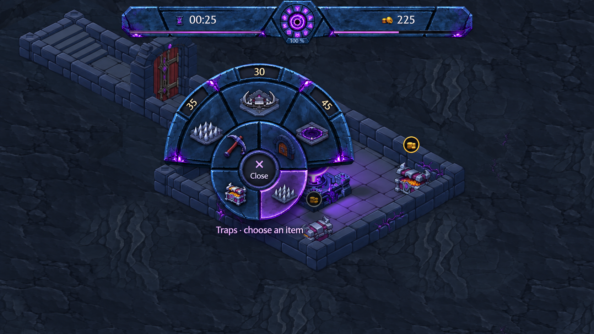
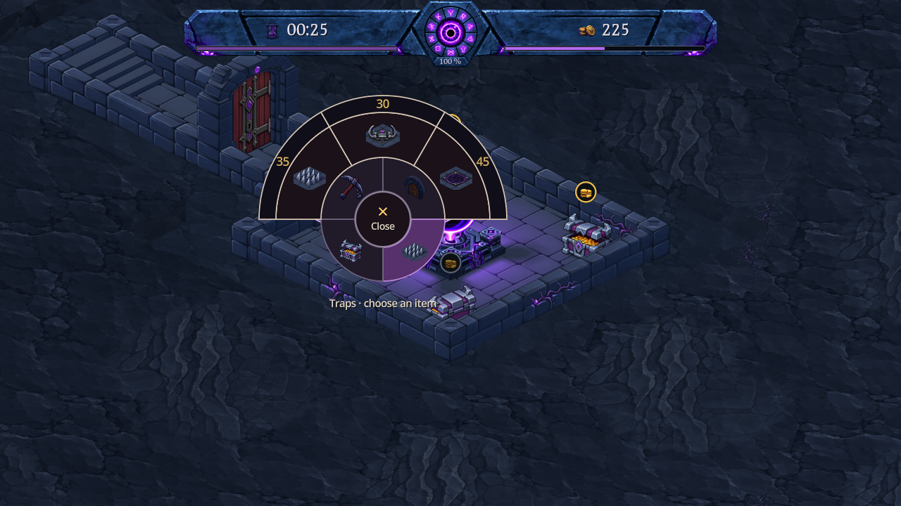

Menu radial : pierre sculptée et corruption violette
Une proposition pour rapprocher le menu de l’en-tête : des faces en pierre bleutée, des joints creusés, des bords biseautés et quelques fissures violettes. « Close » reste au centre, les prix dans leur bande extérieure.


Maquette visuelle générée avec ImageGen, non intégrée au jeu. Le gabarit tactile actuel reste la référence pour l’intégration ; les chiffres resteront droits et les prix seront ceux du jeu. Ouvrir l’image · Consigne de génération